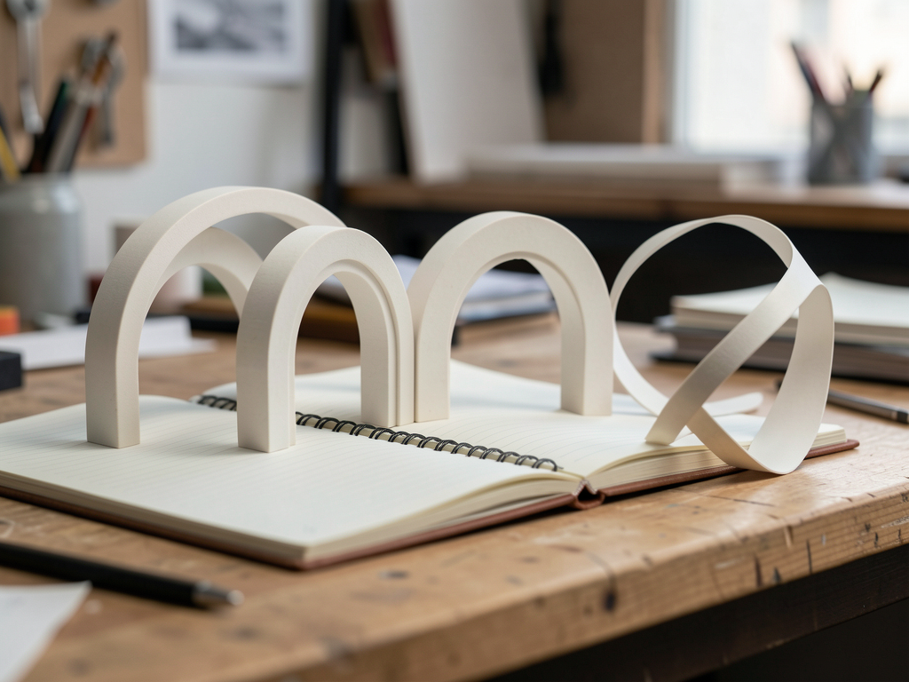

Three templates with 3D scenes to turn your ideas into a presence. Customize in your browser and take the finished site with you.

Astra3D is a library of customizable sites. The scenes are included: change the content and see the result in the preview.
Órbita for portfolios, Forma for agencies, and Caderno for publishing. Each model has an original geometric scene.
Text, image, five palettes, two typefaces, and three motion options. Control the sections and customize up to six items.
Export an HTML file with fonts and scene included. Also save the JSON to edit the project again later.
Everything in the current version happens in your browser. You don’t need to create an account or connect an AI service.
Astra3D exports the site; you choose where to host it. Automatic publishing for visitors’ sites is planned for V6.
To use online: an up-to-date browser, your text, and, if you like, a PNG, JPG, or WebP image up to 8 MB. There’s no API key to configure.
Have your brand name, an introduction, your projects or articles, and a real contact link. Images are processed locally.
Use Node.js 22.12+ or 24, npm, and Git. The dependency file is included in the repository.
git clone https://github.com/inematds/astra3d.git cd astra3d npm ci npm run dev
Start in the editor. Use the guide below to customize, save a copy, and publish.
Open the gallery. Select View demo to explore a complete site without the editor, or Create my site to start a project with Órbita, Forma, or Caderno. You can create multiple projects from the same template. They’re organized under My projects.
In the Content tab, change the name, tagline, introduction, and About text. Add an image and its description. Configure the button with your actual URL.
https://seu-site.com/contato mailto:voce@exemplo.com
Invalid links are not exported. Without a contact link, the site won’t show a button that pretends to send messages.
Choose a color palette and typography in the Appearance tab. In Sections, edit projects or articles, add or remove items, and choose which sections appear. Remove the sample notice only after replacing the content.
Switch the preview between desktop and mobile. Scroll within it in either direction. Open projects and test their links. In Caderno, try the search and categories. On mobile, use the Customize and Preview buttons.
Movement follows the scroll. People who prefer reduced motion see a still scene; without WebGL, the content remains accessible.
Use Save JSON to keep the editable project. Use Export site to download the finished HTML, with fonts, image, and scene included. Open the HTML directly in your browser, even offline.
meu-site.astra3d.json # backup para importar no editor meu-site.html # site pronto para abrir e publicar
Clearing your browser data deletes local projects. Undo history lasts for the session; saved versions stay with the project and are included in the library backup. If a storage warning appears, download the JSON before leaving.
Rename the HTML file to index.html and upload it to your static hosting. In a GitHub Pages repository already configured to serve static HTML, put this file in the published folder. In this version, the editor doesn’t ask for your password or publish to your account.
index.html
To build and publish the Astra3D editor itself, the repository includes a GitHub Actions workflow that publishes dist/:
npm run test npm run build npm run preview
V2.0 keeps multiple independent sites in the same browser. V1 drafts are recovered automatically, without deleting old data.
In My projects, rename, duplicate, search by name, filter by template, or change the order. Archive only moves the project to the Archived tab; use Restore to return it to the active list.
Duplicate creates an independent project with the same text, colors, and image. Editing the copy doesn’t change the original. The project name is internal; edit the brand shown on the site in the Content tab.
At the bottom of the editor panel, open Saved versions. Give one a name and click Save version. You can save up to five. Restoring a version also saves the previous state. Once you reach the limit, the oldest version is replaced.
Download backup includes all projects, archived projects, and saved versions. Import accepts that backup or an individual V1/V2 JSON and creates new copies without replacing existing work. Limit: 100 projects and 64 MB per file.
Data is stored locally. To use it on another device, download and import the backup. Wait for “Saved in this browser” before closing the tab. If another tab modifies the same project, the editor preserves the version already saved and offers to save your changes as a copy.
The initial texts are examples, not real clients or results. Choose an experience and replace the information with your own.
3D ring portal, professional presentation, projects with expanded reading, and contact.
Sculptural ribbon, studio description, and case studies that open to show the challenge, process, and deliverable.
Three-dimensional book, text search, categories, and full reading. It doesn’t collect email addresses without an external service you provide.
V1 and V2.0 are available. The next steps are plans, with dependencies and acceptance criteria documented.